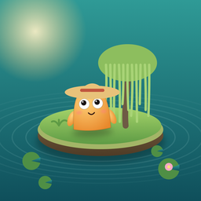
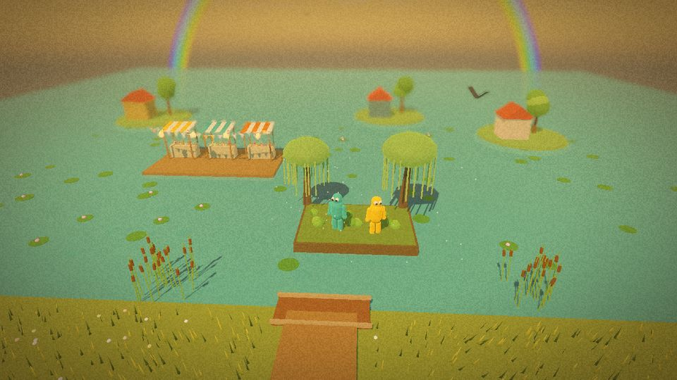

Floating Gardens
Levanten un huerto en el lago que volvió, resistan la tormenta y vendan lo que crezca.
Próximamente

Levantar
Juntos levantan un bancal en el lago, lo hacen crecer y venden en el mercado flotante. Cada capa del bancal es lodo que dragan entre los dos, más juncos de la orilla.
Resistir
Los sauces del borde norte sostienen el bancal cuando llega la tormenta.
Vender
Mantengan el agua limpia, cosechen, remen al mercado y llenen la bolsa.
Formas de jugar
- Solo, con un compañero bot que hace el otro papel: amigo 1 o amigo 2.
- Juntos en dos iPhone o iPad en la misma red Wi-Fi: uno crea la partida y el otro escribe un código corto.
- O dos personas en un mismo iPad, media pantalla cada una.
- Quince lugares en el mapa de la Ciudad: cuatro fáciles, cuatro normales, cuatro difíciles y tres de experto.
Cuánto cuesta
- Los tres primeros niveles son gratis, con todas las formas de jugar.
- "El juego completo" es una sola compra que abre los otros doce, y cada capítulo que se añada después.
- Tu compañero juega gratis: se une a tu partida desde la descarga gratuita.
- Sin anuncios, sin suscripción y sin recopilar datos. Compatible con En familia.
Para teléfonos y iPad
- Controles táctiles pensados para los pulgares, con versión para zurdos.
- Siete idiomas: español, inglés, portugués, francés, alemán, japonés y chino.
- Tablas de clasificación de Game Center para cada nivel y para el juego completo.
- Un ahorro de batería para las noches largas.